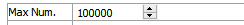
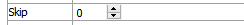
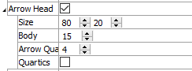
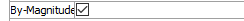
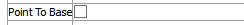

Flow Vector
Description
Fluid flow vector data for a selected joint value.
Attributes
Value

Select which vector value to display.
| Flow Rate | |
| Flow Velocity |
Max Num.
Set the maximum number of items to render.
Max Num.: set the number.
Skip
Specify that every nᵗʰ zone should be skipped when generating vectors to render.
Skip: set the skip value.
Arrow Shape
Control appearance of vector arrows.
Arrow Head: Include (checked) arrow head rendering on vectors.
Size: set the length and width of the arrow head, respectively.
Body: set the thickness of the arrow shaft.
Arrow Quality: set the number of “sides” to include in the arrow head (a sufficiently low number, e.g., “4”, will yield a “blockier” arrow head).
Quartics: use an alternative but faster (checked) rendering method for arrow heads than the default method. This may cause problems with some graphics cards.
By-Magnitude
Color vectors with the contour coloration or uniformly.
By-magnitude: Set (checked) coloring of vector arrows to match contour coloring (see Contour below). When unchecked, this attribute is followed by a Color attribute (see the standard color attribute desription for details) for assigning a uniform color to all vectors in the plot item.
Contour
Set the contour used to color the arrows. Refer to the standard contour control description for details.
Point To Base
“Invert” the vector arrow so that the arrow head points at the point source of the vector.
Point to Base: set (checked) that the arrow head should point to the point source of the vector rather than emanate from it.
Beneath Title, the Joint Flow plot item also provides controls in Legend for Map, Def-Fac, Maximum, Scale, and Contour.
| Was this helpful? ... | UDEC © 2018, Itasca | Updated: Mar 15, 2024 |